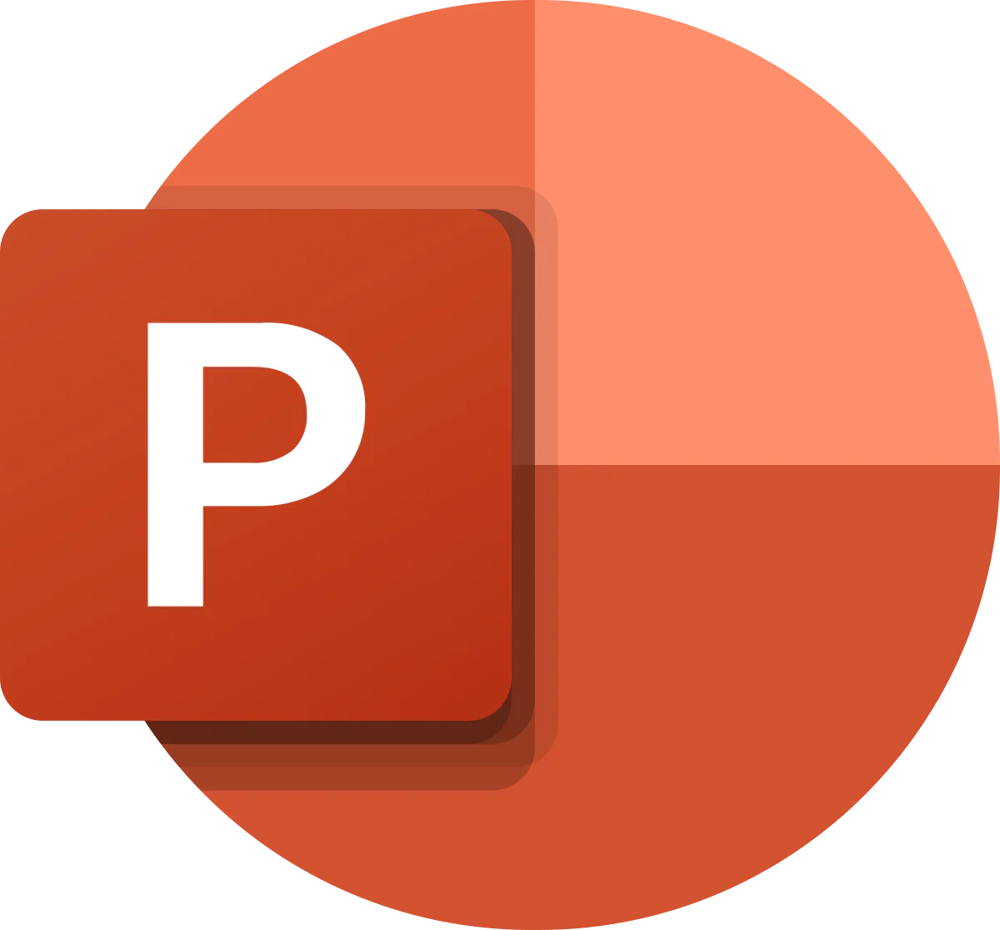
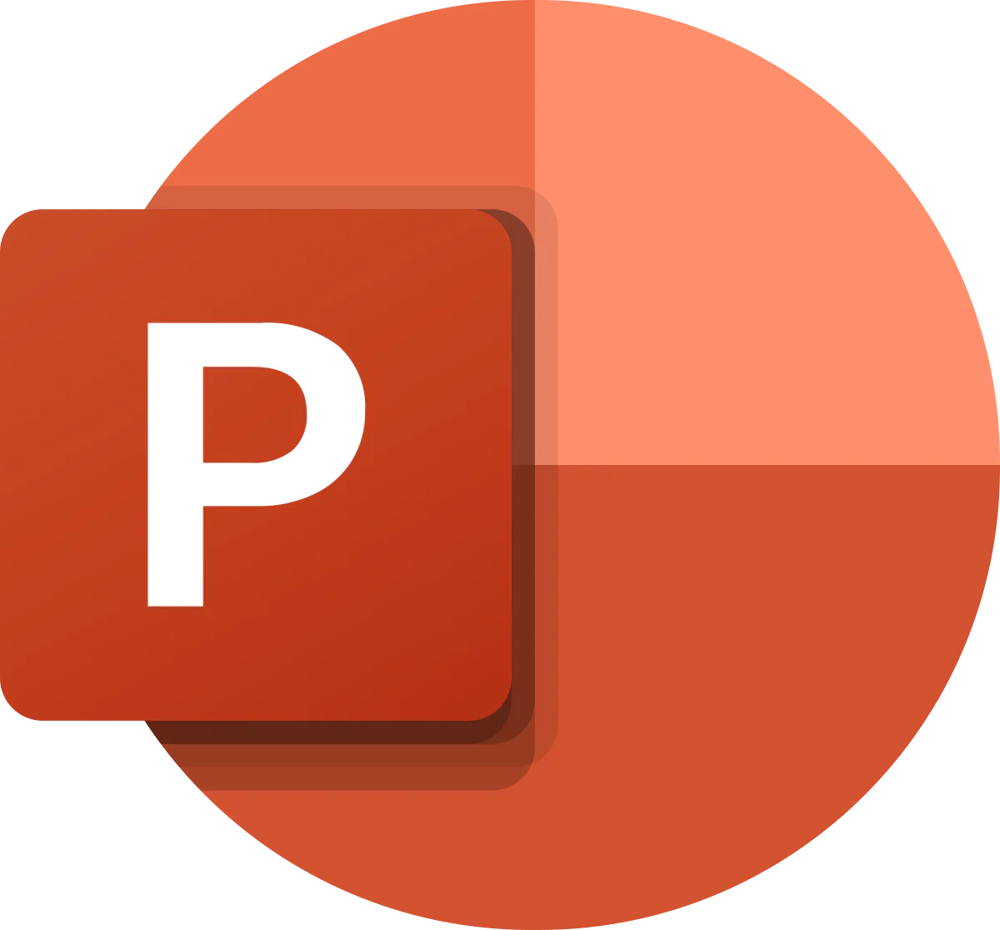

Chargée de médiation culturelle et communication – Théâtre Taïwanais, INALCO, Paris 75013
(FÉVRIER - AVRIL 2025)
- Création de contenus digitaux (publications, stories, vidéos) pour promouvoir l'événement et engager le public.
- Conceptualisation et préparation de l'événement.
- Accueil et accompagnement des visiteurs avec communication adaptée à leurs profils et attentes.
- Conceptualisation de supports pédagogiques et visuels pour faciliter la compréhension et l'expérience des visiteurs.